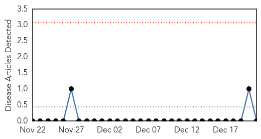
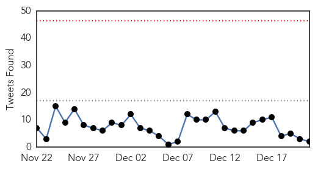
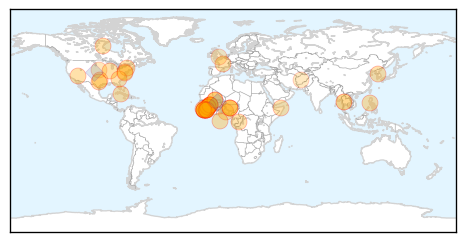
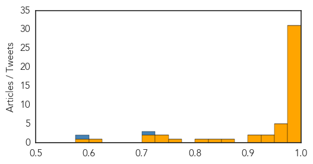

Hemmorhagic Fever
30-Day Web Trend
0 alerts, 0 warnings

30-Day Twitter Trend
0 alerts, 0 warnings

Article Locations

Article Confidences

Top Articles:
-
No articles found for Dec 21, 2014
Top Tweets:
-
No tweets found for Dec 21, 2014
Ebola
30-Day Web Trend
0 alerts, 0 warnings
30-Day Twitter Trend
0 alerts, 0 warnings

Article Locations
Article Confidences
Top Articles:
- 1.000
- Ebola death toll passes 7,000
- 1.000
- UN Chief: Ebola Fight in Liberia is Working
- 1.000
- Experts: It was a busy, black-eye year for disease control: News
- 1.000
- Global Voices · The Struggle to #StopEbola in West Africa
- 0.999
- Ebola Claims 7,000 Lives, Hits Sierra Leone Hardest
- 0.999
- Ebola Deaths Now Over 7,000, Cases Over 19,000, WHO Data Reports
- 0.999
- In Guinea, as Ebola spread slows, Ban pledges UN support towards total eradication
- 0.999
- Chicago child tests negative for Ebola
- 0.999
- In Guinea, as Ebola spread slows, Ban pledges UN support towards total eradication
- 0.999
- Traditional burials fueling Ebola outbreak in Sierra Leone - National
- 0.998
- Safe burial practices urged to stop Ebola in Sierra Leone
- 0.998
- DOYLE MCMANUS: Where have Ebola’s fear-mongers all gone?
- 0.998
- In Guinea, as Ebola spread slows, Ban pledges UN support towards total eradication
- 0.998
- The Ebola Outbreak Keeps Spreading Like Wildfire In West Africa
- 0.997
- Ebola scare in Olongapo
- 0.996
- Sierra Leone still struggling with Ebola outbreak
- 0.996
- UN's Ban Urges End to Discrimination Against Ebola Workers
- 0.996
- Georgia scores low on report about preventing outbreaks
- 0.995
- UN chief arrives in Guinea on Ebola tour
- 0.993
- Ban pledges UN support towards total eradication of Ebola from Guinea
- 0.993
- UN chief kicks off tour of Ebola-hit west Africa
- 0.992
- The threat to West African health care
- 0.991
- Safe burial practices urged to stop Ebola in Sierra Leone>
- 0.989
- Sierra Leone urges safe burials to stem Ebola
- 0.988
- U.N. chief thanks S. Korea for joining fight against Ebola
- 0.987
- Top Sierra Leone Doctor Dies From Ebola While Drug Is On The Way
- 0.987
- Volunteer Nurse was Released from DC Hospital to Spend Holidays with Family
- 0.984
- Trinidad health authorities say Nigerian student has malaria, not Ebola
- 0.980
- Md. regulators hold hearing to address Uber settlement
- 0.980
- Baltimore man kills 2 NYPD officers
- 0.980
- Md. calls revamped health care exchange a success
- 0.968
- Tolland nurse treated Ebola in Sierra Leone
- 0.962
- U.N.'s Ebola mission should be closed once battle won: Ban
- 0.957
- Tolland nurse treated Ebola in Sierra Leone
- 0.954
- African Union To Pull Sierra Leone Troops Out Of Somalia Due To Ebola
- 0.951
- Year in Review: Ebola epidemic
- 0.934
- OAU re-admits 100 students from Ebola ravaged countries
- 0.931
- Somalia: S Leone to withdraw Somalia troops over Ebola
- 0.923
- Secretary-General’s remarks at joint press conference with President Ernest Bai Koroma of Sierra Leone
- 0.912
- Marin Ebola volunteer returns home, placed under quarantine for 21 days
- 0.871
- 'Social mobilization units' look to overcome misconceptions of Ebola
- 0.845
- CDC ‘tracking 1,400 possible Ebola cases in U.S.’
- 0.803
- CDC Hiding Numbers of Possible Ebola Cases in US
- 0.770
- Drug-resistant malaria: The world's next big health crisis? - Health
- 0.740
- Sierra Leone News: Govt. Cannot continue to run after Ebola -NERC « Awoko Newspaper
- 0.728
- Drug-resistant malaria: the world’s next big health crisis?
- 0.724
- Iowa National Guard prepares to help in West Africa
- 0.717
- UK dispatches 100 soldiers more to fight Ebola in Sierra Leone
- 0.609
- S Leone to retract Somalia troops over Ebola
- 0.597
- Foreign Minister appeals for lifting of flight ban « Awoko Newspaper
Showing top 50 articles...
Top Tweets:
- 0.929
- WHO: Ebola death toll hits 7373: FILE: A volunteer receives the Ebola vaccination "cAd3-EBO-Z" ...... http://t.co/SLV0BC74Qo
- 0.759
- Surge in Sierra Leone puts Ebola death toll over 7,000: WHO | CTV News http://t.co/vWkMiFCWW0
- 0.745
- Sierra Leone lockdown will not help halt Ebola: MSF http://t.co/dsKh4yu7aB Reuters Africa Ebola EbolaOutbreak http://t.co/3xyc2eROed
- 0.671
- Ebola outbreak: Sierra Leone's guardian of the dead is at work again http://t.co/6kqbHDSHua
- 0.593
- NHS Ebola staff 'insulted' by UK travel ban http://t.co/dJkPjZz3U5
- 0.591
- RT: The Maforki Ebola Treatment Ctr in SierraLeone has a capacity of 100 beds. Today it has 60 patients. EbolaResponse http://t.c…
- 0.573
- Extra Extra: Hospitalized Child in Chicago Tests Negative For Ebola Virus: Chicagoist http://t.co/iJ6j7VSNPg
- 0.513
- Sierra Leone urges safe burials to stem Ebola http://t.co/ycLHYYOGBI TackleEbola
- 0.503
- The Maforki Ebola Treatment Ctr in SierraLeone has a capacity of 100 beds. Today it has 60 patients. EbolaResponse http://t.co/K7zoPSxO4J